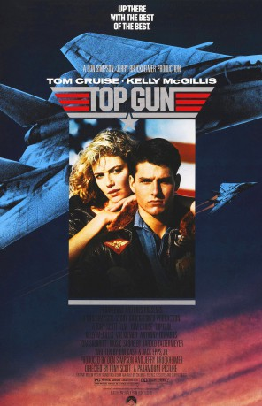

#80 Top Gun - Sie fürchten weder Tod noch Teufel
Alternativ: Top Gun
Auszeichnungen: 1 Oscars gewonnen für 3 Oscars nominiert 1 GoldenGlobes gewonnen
 
 IMDB-Wertung: 6.9 / 10
IMDB-Wertung: 6.9 / 10  Metascore: 50
Metascore: 50 
Der junge Lieutenant Pete „Maverick“ Mitchell (Tom Cruise) ist ein Kampfpilot bei der United States Navy. Bei einer heiklen Mission müssen Maverick und sein Waffensystemoffizier Nick "Goose" Bradshaw (Anthony Edwards) die Befehle ihres Kommandanten Stinger (James Tolkan) missachten, um einem Kameraden zu helfen, der eine Panikattacke bekommen hat. Dadurch werden Maverick und Goose von Stinger widerwillig für die Ausbildung bei der United States Navy Fighter Weapons School, genannt "Top Gun" vorgeschlagen. Dort liefert sich Maverick gleich eine Rivalität mit dem Flugschüler Tom "Iceman" Kazanski (Val Kilmer). Außerdem bekommt er durch seine rücksichtslose Flugweise Probleme. Er gewinnt zwar regelmäßig Flugkämpfe, z.B. gegen Ausbilder Leutnant Commander Rick "Jester" Heatherly (Michael Ironside), bricht dabei jedoch Einsatzregeln und handelt nicht gerade teamfähig.
Jahr: 1986
Dauer: 110 Minuten
FSK: 12
Land: USA Studio: Paramount PicturesTonspuren: DD2.0 - ,
Untertitel:
Auflösung: 1080p (1920×800) Größe: 5898 MB
Genre: Action, Drama
Regisseur:  Tony Scott
Tony Scott
Drehbuch: Jim Cash, Jack Epps Jr., Ehud Yonay, Warren Skaaren
Soundtrack: Harold Faltermeyer
Darsteller:
 Tom Cruise als Maverick
Tom Cruise als Maverick Kelly McGillis als Charlie
Kelly McGillis als Charlie Val Kilmer als Iceman
Val Kilmer als Iceman Anthony Edwards als Goose
Anthony Edwards als Goose Tom Skerritt als Viper
Tom Skerritt als Viper Michael Ironside als Jester
Michael Ironside als Jester- John Stockwell als Cougar
 Barry Tubb als Wolfman
Barry Tubb als Wolfman- Rick Rossovich als Slider
 Tim Robbins als Merlin
Tim Robbins als Merlin Clarence Gilyard Jr. als Sundown
Clarence Gilyard Jr. als Sundown Whip Hubley als Hollywood
Whip Hubley als Hollywood James Tolkan als Stinger
James Tolkan als Stinger Meg Ryan als Carole
Meg Ryan als Carole Adrian Pasdar als Chipper
Adrian Pasdar als Chipper- Duke Stroud als Air Boss Johnson
 Frank Pesce als Bartender
Frank Pesce als Bartender- Linda Rae Jurgens als Mrs. Metcalf
- Kate Romero als Bar patron , uncredited
- Wendy Wells-Gunkel als Vollyball Spectator , uncredited
- Randall Brady als Lt. Davis
- Brian Sheehan als Sprawl
- Ron Clark als Inquiry Commander
- Pete Pettigrew als Perry Siedenthal
- Troy Hunter als Radio Operator
- T.J. Cassidy als Himself
- Debi Fares als (uncredited
- Mark Gadbois als Flight Captain , uncredited
- Chase Jazzborne als Officer's Club Patron , uncredited
- Monty Jordan als Cmdr. Phillips , uncredited, unconfirmed
- Scott Krambeck als Scott , uncredited
- Victor Spadaro als F5E VF-126 Bandits Adversary Pilot / Mig Pilot , uncredited
Datei: X:\1986\Top Gun - Sie fürchten weder Tod noch Teufel (1986, FSK12, 1920x800).mkv seit 02.02.2015
Festplatte: HD 1980-1986
 Es gibt insgesamt 50 Filme in der Gruppe '1986'
Es gibt insgesamt 50 Filme in der Gruppe '1986'